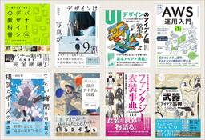
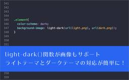
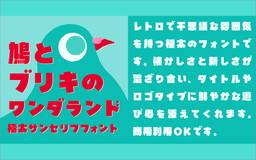
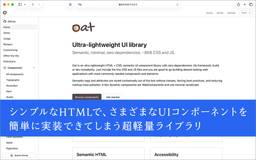

コリス
https://coliss.com
Web制作に関する最新の情報をご紹介
フィード

KIndle本 春の特大セール第2弾が開催！ Web制作、UIデザイン、イラスト・創作に役立つ資料や辞典の良書がお買い得です
コリス
※本ページは、アフィリエイト広告を利用しています。 KIndle本 春の特大セール第2弾が開催です！ Webや紙のデザイン、HTML/CSSなどWeb制作の解説書、同人誌・絵師さん向けのイラストの良書がたくさんセール対象 […]
15時間前
入門書だけど、かなり実践的で詳しい！ 進化したFigmaの使い方がよく分かる解説書 -Figmaのきほん 改訂版 21
21
コリス
※本ページは、アフィリエイト広告を利用しています。 UIデザインにおいて、もはやFigmaは必要不可欠なツールになっています。 Figmaをこれから初めて使用する人、なんとなく使ってるけどきちんと使い方を学びたい人向けに […]
4日前

CSSのlight-dark()関数が画像もサポート！ これでライトテーマとダークテーマの対応がさらに簡単になります 12
コリス
Webサイトをライトテーマとダークテーマ対応にするには、CSSのlight-dark()関数を使用すると今までより簡単に実装できます。 これまではlight-dark()関数はカラー値（<color>）のみし […]
5日前

商用利用OKの無料版もあるぞ！ レトロな雰囲気がかわいい、極太の日本語フォント「鳩とブリキのワンダランド」 2
コリス
「はんなり明朝」「こころ明朝体」「こども丸ゴシック」などのフリーフォント、最近では「ビルと谷間と高架下」「そばとうどん」などをリリースしているTyping Artさんから、新作の日本語フォント「鳩とブリキのワンダランド」 […]
6日前
UIに使用する色のコントラストをAIで検証、基準を満たしていないときはデザインに合った代替色を提案してくれる無料ツール 20
コリス
AIを使用して前景色と背景色のコントラスト、WCAG 2.1および2.2のAA/AAA基準を満たすアクセシブルな色の組み合わせをテストし、さらにその組み合わせに合った色で基準に満たした色も提案してくれる無料ツールを紹介し […]
7日前

ミニマルなデザインで使いやすい！ シンプルなHTMLでさまざまなUIコンポーネントを実装できる超軽量ライブラリ -Oat UI 41
コリス
セマンティックなHTMLで、Webサイトやスマホアプリでよく使用されるさまざまなUIコンポーネントや要素を実装できる超軽量UIライブラリを紹介します。 デザインはシンプルでミニマル！ 依存関係は一切なく、classレスと […]
8日前

小さなバナーに潜むデザインのさまざまなアイデアとテクニックが詳しく解説されたデザイン書 -バナーデザインのアイデア帳
コリス
※本ページは、アフィリエイト広告を利用しています。 デザインで役立つのは、良質なデザインの引き出し持っておくこと。バナーのデザインはもちろん、Web制作に携わるすべての人にお勧めのデザイン書を紹介します。 本書は本日、3 […]
12日前
これは絶対見逃したらダメ！ 1Password値上げ前の最後となるセールがソースネクストで開催
コリス
※本ページは、アフィリエイト広告を利用しています。 1Passwordが、ついに3/27から値上げされるとのことです。この値上げ前の最後となるセールがソースネクストで開催しています！ 1Passwordの公式サイトで購入 […]
13日前
これは覚えておきたい！ シンプルなCSSで、画像をホバーすると拡大し、マスクまでしてくれる
コリス
画像をホバーすると拡大するCSSのテクニックは昔からありますが、画像の拡大分をoverflow:hidden;で非表示にするのではなく、clip-pathでクリッピングするとってもシンプルなCSSを紹介します。 実際の動 […]
14日前
ちょっと面白いフォントがGoogle Fontsで使える！ テキストを棒グラフや折れ線グラフ、円グラフに変換して表示できるフォント -Datatype
コリス
テキストを棒グラフや折れ線グラフ、円グラフに変換して表示するフォントがGoogle Fontsで利用できるようになったので紹介します。 たとえば、{b:15,45,80,30,60}というテキストは5つのバーがある棒グラ […]
15日前